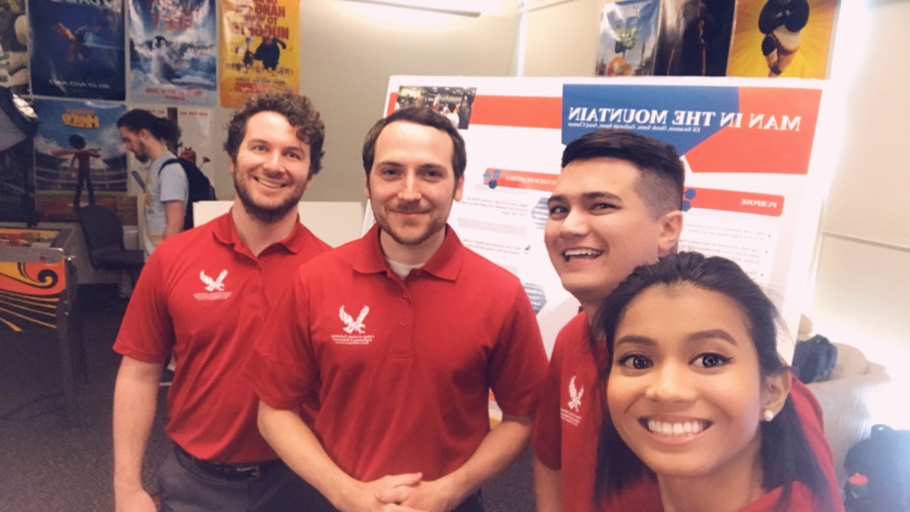
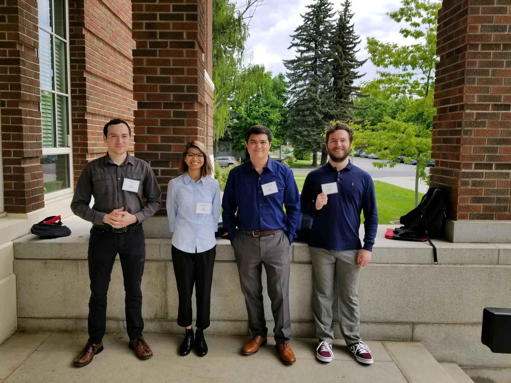
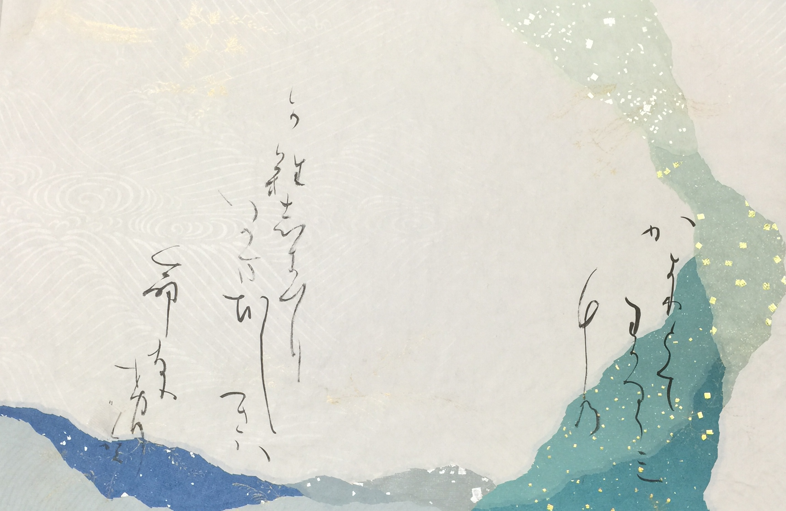
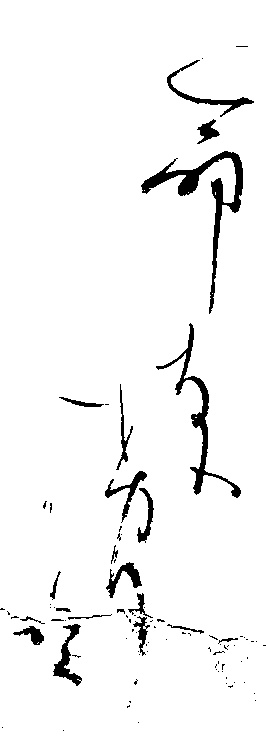
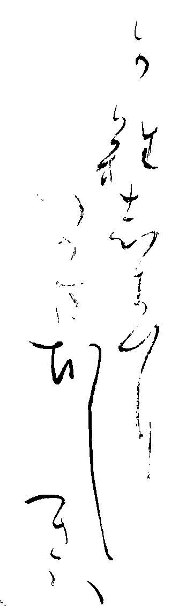
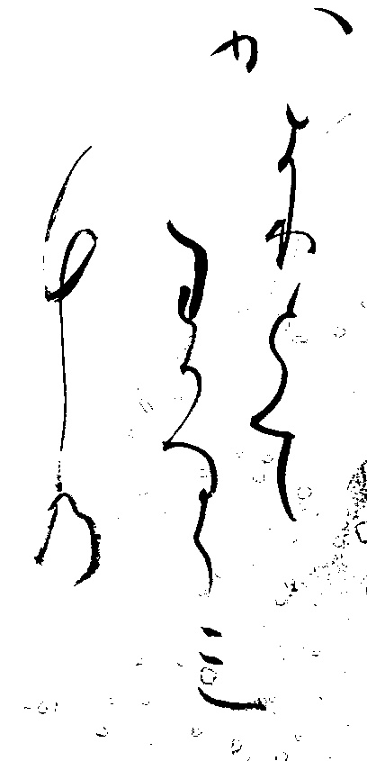

Experience:
-
Man in the Mountain (MitM) ⁃ Eastern Washington University
Developer ⁃ 01/2018 to 06/2018
- Worked in a four-member team project.
- Developed MitM for Microsoft 2018 Puget Sound Technology Education And Literacy in Schools (TEALS) Fair.
- Designed an interactive program via Unity that dynamically generates a 3D terrain representation of a live webcam feed.
- Implemented Face Tracking via OpenCV.
- Used C++ OpenCV, and C# in Unity.
- Represented EWU with teammates at Microsoft TEALS conference which 2000+ high schoolers attended. 
-
EWU 2018 Research and Creative Works Syposium ⁃ Eastern Washington University
Developer/Presenter ⁃ 05/2018
- Presented Man in the Mountain with my four-member team in the school's syposium.
- Symposium website 
-
Technology Education And Literacy in Schools (TEALS) Fair ⁃ Microsoft Puget Sound
Speaker ⁃ 04/2018
- Represented Eastern Washington University at Learn About College CS Programs panel alongside with professors from different universities in Washington state.
- 2018 TEALS Fair website
- 2018 TEALS Washington Computer Science Fair website
- Panel picture

-
EWU builds observatory on top of Dressler (2018 April Fools Prank) ⁃ Eastern Washington University
Tracker and 3D Model Designer ⁃ 03/2018 to 04/2018
- Worked in a three-member team project
- Guided ideation of project via client meetings, research, team brainstorming, modeling
- Took videos, tracked, and rendered the project.
- My team's project got selected out of 15 other projects to be used for the school's April Fools Prank.
- Eastern 24/7 article
-
Image Signal Processing ⁃ Eastern Washington University
Developer ⁃ 11/2017 to 12/2017
- Implemented code to extract the writings by detecting edges and identifying background of a Japanese calligraphy painting.
- Developed a program in C++ using OpenCV.
- Implemented algorithm and obtimaized it.
- Input: 
- Output:   
-
Software Engineering ⁃ Eastern Washington University
Developer ⁃ 04/2017 to 06/2017
- Worked in a three-member team project
- Developed a control system for a spaceship simulation in Java
- Implemented and tested code
-
Computer Networks ⁃ Eastern Washington University
Developer ⁃ 01/2017 to 03/2017
- Worked in a four-member team project
- Created server and client multi-chatroom program in C; enforced receiving and sending protocol, implemented chatroom features.
- Enforced strict protocol in order to connect with other groups' client and server.
- Developed Server-Client chatroom in C.